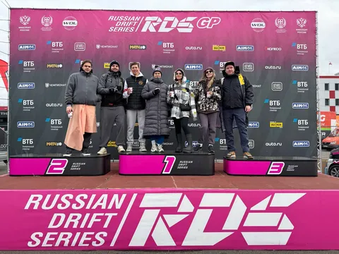

Как сказал один умный человек - "один раз - случайность, два раза - совпадение, три раза - традиция". Так что считаем, что мы зафиксировали традицию ездить определенным составом (численностью 7 человек) на этапы RDS GP, побывав на финальном этапе этого года на MRW.
Вообще, целево - традиция должна заключаться в том, чтобы ездить на этапы в другие города. В прошлом году это был Питер, в этом - Красноярск https://t.me/vit_ded/77. Так что, чтобы закрепить традицию именно в целевой постановке вопроса, нам еще предстоит в следующем году съездить в Нижний. Как только объявят расписание - приступим к исполнению. Но пока хотя бы выбрались на третий совместный этап в Подмосковье, что уже неплохо, тем более что полный состав собрался почти спонтанно.
По тренду этого года, сухим этап не был. Но нам повезло (уж как минимум по сравнению с Красноярском) - в воскресный день дождя почти не было, так что в этом плане кайфануть удалось больше. Не могу сказать, что было прям много мясных заездов, но было хорошо. Вообще я не очень люблю MRW - трибуны далековато от гоночной дорожки, да и конфиг не самый эпичный. В этом плане я люблю Мячик и Крас. Зато на MRW удобная логистика и близко сервис-парк (из минусов - команды больше торчат в закрытых боксах, нежели в палатках).
Результаты порадовали.
Чемпион этапа - Гоча, чемпион сезона - Царь. Сибиряки снова показали, кто тут главный в российском дрифте.
Шабанов продолжает показывать уровень. Мне он импонирует своей скромностью и всеядностью - он может ехать на любой машине в любом состоянии и показывать результат, не оправдываясь внешними факторами.
Ну и молодежь радует - Поповы уже явно конкурируют с топами, Тимофей и Гроссман выстреливают, Тиводар и Шнайдер обогнали многих старичков. Уверен, через 1-2 сезона они станут костяком пелетона.
Всем дрифт!
